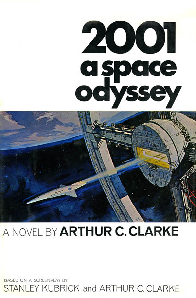

odyssee2001.tk
Le site de nos Travaux Personnels Encadres
1e S svt - Sciences Physiques & Littérature
Arthur Recht, Edouard Durand
Gabriel Forien
Plan du site :
Introduction
Ondes électro-magnétiques
Ondes radio et Infra-Rouges
Ultra-Violets, Rayons X et Rayons Gamma
Laser, et Laser Méga-Joules
Les ondes dans l'œuvre
La communication
L'analyse
Comportement ondulatoire
Diffraction
Réfraction
Commentaire de texte
Conclusion
Fiches de synthèse
